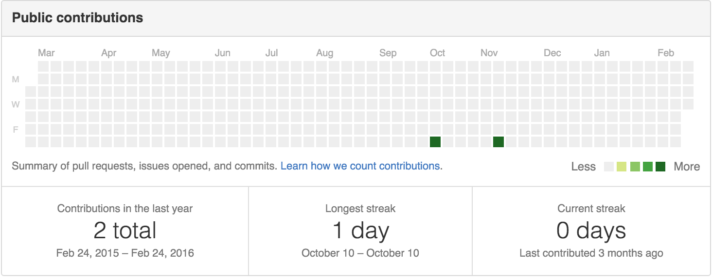

Pull requests
Issues
Gists
Contributions
Repositories
Public activity
Follow
Popular repositories
Spoon-Knife
This repo is for demonstration purposes only.
Hello-World
My first repository on Github!
hello-world
My first repository on Github!
octocat.github.io
git-consortium
This repo is for demonstration purposes only.

Contribution Activity
Period:
1 week
octocat has no activity during this period.
Search
All Sources Forks Mirrors
Spoon-Knife
This repo is for demonstration purposes only.
Hello-World
My first repository on Github!
hello-world
My first repository on Github!
octocat.github.io
git-consortium
This repo is for demonstration purposes only.
octocat doesn't have any public events to show.